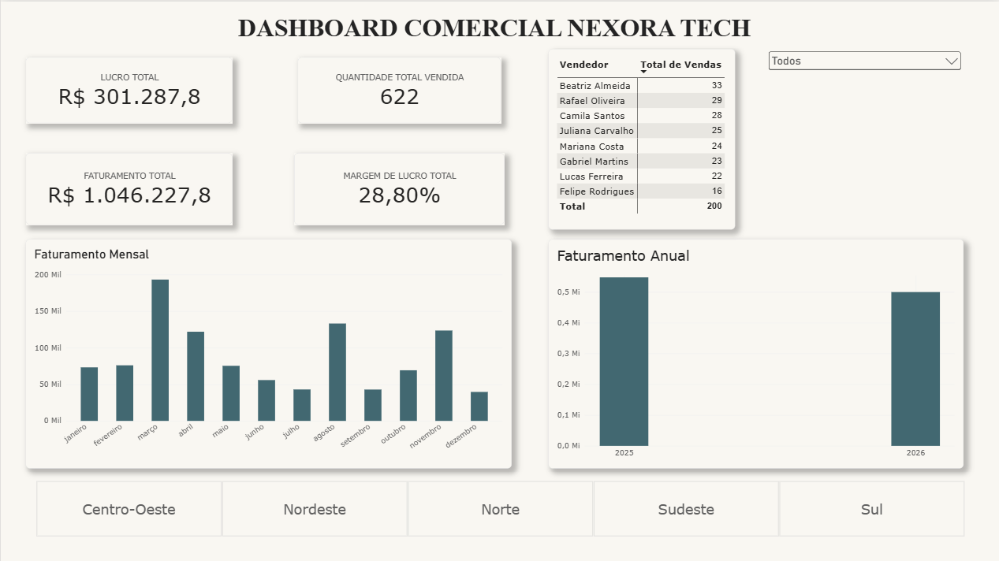

Olá! Me chamo Eduarda
Analista de Dados em Formação
Desenvolvendo conhecimentos em Excel, Power BI, SQL e análise de dados, com experiência em organização de informações, indicadores e relatórios.
Sobre mim
Sou uma profissional com experiência nas áreas administrativa, financeira e logística, atualmente direcionando minha carreira para a área de Análise de Dados.
Tenho desenvolvido conhecimentos em Excel, Power BI e SQL, aplicando esses recursos na organização de informações, criação de indicadores e elaboração de relatórios para apoiar a tomada de decisões.
Também possuo conhecimentos introdutórios em lógica de programação e nas linguagens JavaScript, Python e Java, incluindo conceitos de programação orientada a objetos, como classes, objetos, herança e polimorfismo.
Neste portfólio, apresento meus projetos, conhecimentos técnicos e minha evolução profissional na área de tecnologia.
Habilidades técnicas
Excel
Organização, tratamento e análise de informações.
Power BI
Criação de dashboards, indicadores e relatórios.
SQL
Fundamentos de banco de dados e consultas.
JavaScript
Conhecimentos introdutórios em lógica de programação.
Python
Fundamentos de programação.
Java
Fundamentos de orientação a objetos, classes, objetos, herança e polimorfismo.
Meus Projetos

Dashboard Comercial – Nexora Tech
Projeto de análise de dados desenvolvido com Excel e Power BI, com indicadores de faturamento, lucro, margem de lucro e desempenho de vendas.
Ferramentas: Excel, Power BI e DAX.
Ver projeto no GitHubEntre em contato
Você pode conhecer meus projetos e acompanhar minha evolução profissional pelos links abaixo.